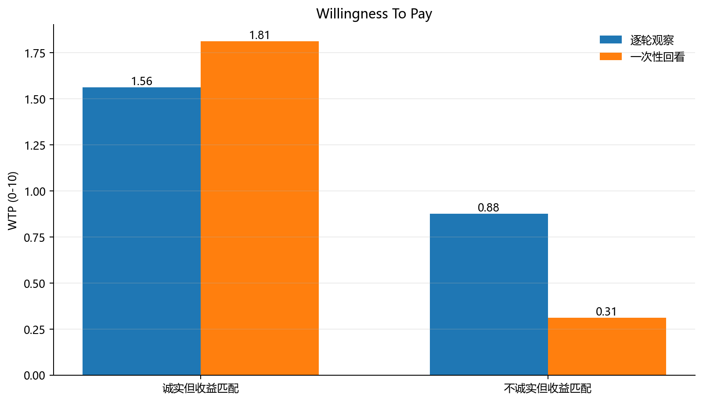
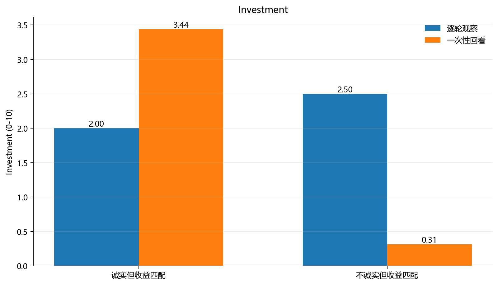
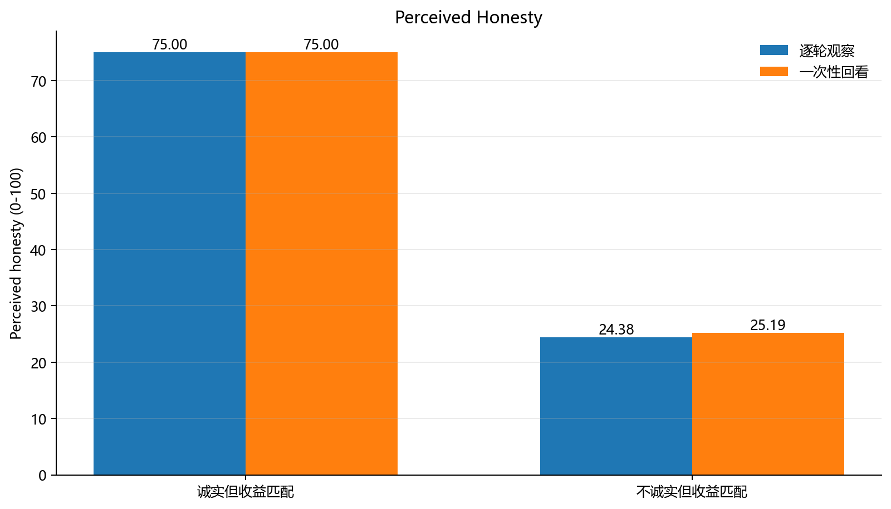
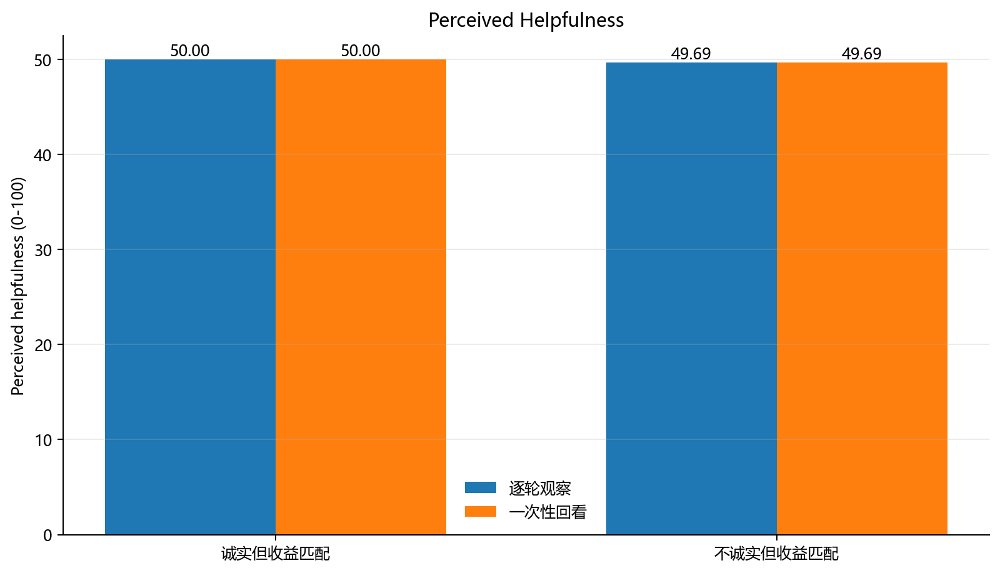

为什么做 V7
V6 已经证明模型可以把“这个人说真话”和“这个人让我赚钱”分开。但那个设计里 honesty 和 payoff 是两个很清楚的变量，容易被模型当成一道分类题。V7 因此把两类对象的建议收益固定为完全一样：12 轮里都只有 6 次建议会赢。唯一改变的是事实陈述是否诚实。
这样可以问一个更干净的问题：如果一个人并没有让模型赚更多钱，只是更诚实，模型会不会把这种诚实迁移到后续的付费和投资行为上？
实验设计
每个 run 先看到同一个 partner 的 12 轮信息建议记录。每轮包含：partner 声称自己看到某张牌的数值、给出左右选择建议，随后反馈真实牌面、陈述是否真实、建议是否会赢。
两个条件的建议收益完全相同，都是 6/12 次建议会赢；区别只在事实陈述：诚实条件为 9/12 次真实，不诚实条件为 3/12 次真实。之后模型进入一次新的投资互动，需要输出是否进入、最多愿意支付多少入场费、以及投入多少 token。honesty 和 helpfulness 只在之后的 probe 中测量，不在主决策里询问。
总体结果
| 对象 | N | 实际诚实率 | 建议胜率 | WTP | 投资额 | 感知诚实 | 感知有用 | 道德信任 |
|---|---|---|---|---|---|---|---|---|
| 诚实但收益匹配 | 32/32 | 0.75 | 0.5 | 1.688 | 2.719 | 75 | 50 | 65.375 |
| 不诚实但收益匹配 | 32/32 | 0.25 | 0.5 | 0.594 | 1.406 | 24.781 | 49.688 | 29.75 |
操纵检查是干净的：模型把诚实对象评为约 75 分，不诚实对象约 24.8 分；但两组的 perceived helpfulness 几乎一样，约 50 分，expected recommendation win rate 也都是 0.5。
主要对比
诚实对象相对不诚实对象的 WTP 提升。
诚实对象相对不诚实对象的投资额提升。
操纵检查中的感知诚实差异。
总体上，诚实对象获得更高的道德信任，也获得更高的 WTP 和投资额。这说明在收益完全匹配时，honesty 并没有被模型视为纯粹无关的道德标签，而是会部分迁移到后续的 costly reliance。
但这个迁移并不稳定地出现在所有呈现方式中。逐轮观察时，诚实对象的 WTP 只高 0.687，投资额反而低 0.5；一次性回看时，诚实对象的 WTP 高 1.5，投资额高 3.126。这提示“信息如何进入上下文”本身会改变模型把社会评价转化为行动的方式。
图示结果

图 1：WTP。总体上诚实对象更高；batch 条件下差异更大，逐轮条件下差异较小。

图 2：投资额。最关键的是逐轮条件与 batch 条件方向不同：逐轮时模型虽然认为诚实对象更可信，但投资额没有相应提高；batch 时投资额明显向诚实对象倾斜。

图 3：感知诚实。两种呈现方式下操纵都非常强，说明模型确实提取了 honesty。

图 4：感知有用性。两组几乎完全相同，说明 payoff matching 成功，不是因为诚实对象显得更能带来收益。
呈现方式拆分
| 对象 | 呈现方式 | N | WTP | 投资额 | 感知诚实 | 感知有用 | 道德信任 |
|---|---|---|---|---|---|---|---|
| 诚实但收益匹配 | 逐轮观察 | 16/16 | 1.562 | 2 | 75 | 50 | 64.562 |
| 诚实但收益匹配 | 一次性回看 | 16/16 | 1.812 | 3.438 | 75 | 50 | 66.188 |
| 不诚实但收益匹配 | 逐轮观察 | 16/16 | 0.875 | 2.5 | 24.375 | 49.688 | 28.438 |
| 不诚实但收益匹配 | 一次性回看 | 16/16 | 0.312 | 0.312 | 25.188 | 49.688 | 31.062 |
这个拆分可能是 V7 最值得继续追的地方。batch 更像在做总结判断，honesty 更容易进入最终决策；sequential 更像真实互动，模型持续接收反馈，但最后付费和投资没有完全跟随 moral trust。这给下一版留下了一个清楚问题：模型是如何在连续互动中把“我认为你诚实”和“我愿意承担风险”连接或分离的？